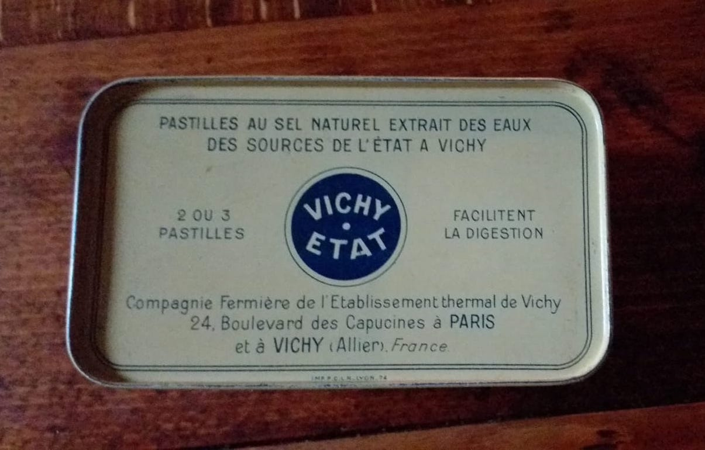
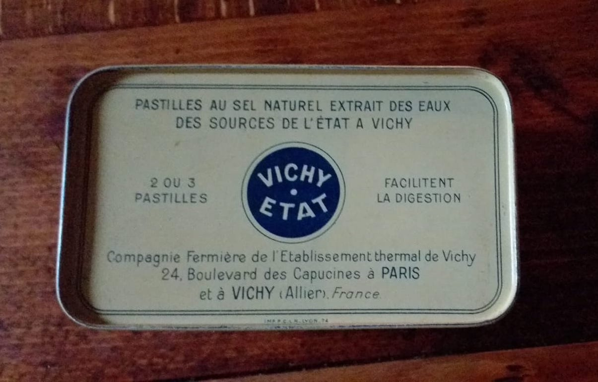

Muller Blog
Saturday, June 15, 2019
This afternoon, I had an appointment with Samuel Muller -son of Michel- whom I contacted in February via Facebook so that he could connect me with his aunt (I knew that his dad had passed away) hoping to be able to organize a meeting with the group of students that I will accompany to Paris next January. He told me that unfortunately Annette was seriously ill but that he was willing to answer my questions about his family's story.
I went to Menilmontant early this morning to try to recognize the places Annette described in her testimony and to retrace the path Rachel and the children took on the morning of July 16, 1942, from 3 rue de l'Avenir to La Bellevilloise. I had never been to this neighborhood.


Rue de l'Avenir (Future Street) is an impasse. On the 1940 plan, it is called Passage de l'Avenir. Rue, Passage, Future are urban anomalies as much as historical ones for the Mullers. On July 16, 1942, this place was indeed a dead end for them, and certainly the starting point of the narrowing of their future.
Visiteurs circulant sur la plate-forme mobile installée lors de l'Exposition universelle de 1900 from Bibliothèque nationale de France on Vimeo.
Upon leaving Rue de l'Avenir, I turned left and walked down therue Pixérécourt.I recognized the haberdashery where Rachel had sent Annette that morning supposedly to buy a comb but certainly in a desperate attempt to allow her little one to run away. On the other hand, I could not recognize the bakery whose owners had applauded the sad spectacle of the raid.

I wasn't sure which way to go, but the street seemed ready to usher me along. The sign of a restaurant named Là-Haut (Over There) convinced me to go straight.

I then turned right on rue de Ménilmontant and started walking down in search of the Bellevilloise. As I went too far, I had to find a shortcut to catch up with rue Boyer. The name of the street I cut through was appropriate to our story this time: rue Juillet (July street). I finally arrived in front of the Bellevilloise where Rachel and the children were locked up and from which Henri and Jean had fled. Like a Greek chorus, the city reminded me of the objective of my project with these red banners stretched across the front of the establishment and whispering to me "ZONE SILENCE".

Addendum
When we filmed Henri, I discovered that I had been mistaken about the haberdashery. He explained the store with the blue front was a dry cleaner's back then. The haberdashery was located further down, at 14 rue Pixérécourt. Today it is a physiotherapist's office whose facade has erased all external traces of the old store.

Nevertheless, the Streetview function of Google map allows us to go back in time to 2008 and to find the different appearances that a place has had since. On the photo of 14 rue Pixérécourt taken in 2008, we discover wooden panels that remind us of the commercial past of the place and let us imagine the store where Annette went.

As for the bakery, it was at the corner of Rue de Pixérécourt and Rue de l'Est. This East that Rachel had left and where she was ineluctably brought back to be murdered. Henri was happy to point out to me that the famous bakery was now a very private club. "That'll teach those good people as they say!" he quipped, with a mischievous smile, referring to the bakers. "I have a picture from when it was still a bakery. I'll show it to you."

Later, I met Samuel Muller at 3 rue de l'Avenir. We ended at the P'tit Bistrot located at 108 rue de Ménilmontant.

During the conversation, Samuel mentioned his uncle Henri, the last survivor of the siblings but who, unlike Michel and Annette, rarely testified in public.
I told him about my project to retrace the steps of his grandmother and her children on the day of the Vel d'Hiv round-up with a 360-degree camera. By going from the door of the Muller's apartment rue de l'Avenir to the Bellevilloise, this film would allow us to tell the story of the family but also of History by reviving the sound of footsteps on the staircase, the sound of the door closing, by making the façades of the city , which have certainly changed but which know how to whisper what they have seen to those who lend an ear, speak. What if Henri was part of the film? He could be our guide who scrapes the newer layers of paint off the walls and reveals a bit what they looked like on that day... Samuel promised to call his uncle and tell him about the video project. We'll see... [the rest of this post is on Rachel Jedinak’s website]
Sunday, June 16, 2019
Received a text from Samuel. Henri Muller agrees to meet me and participate in the film! Samuel gave me his phone number.
[Later in the day]
Meeting with Henri at 3 rue de l'Avenir on July 10th...
Wednesday, July 10, 2019
Henri arrived with a plastic bag in which was a folder filled with documents about his family and the Vel d'Hiv roundup.
We filmed him alone as he followed the path he took with his mother, brothers and little sister on that July 16. All along the way, he commented on the places he passed: where the store where Rachel sent Annette to buy a comb was, where the bakers applauded the procession, where he went to the cinema, where he'd meet the gang he was the leader of, etc.
The arrival at the Bellevilloise was particularly moving. How can one imagine that within the walls of the hipster establishment, whose brunch is praised by some tourist sites, hundreds of women and children were locked up before buses drove them to the Vélodrome d'Hiver?
We had lunch at the P'tit Bistrot. After eating, Henri took out of his pocket a small metal box meticulously closed with a rubber band rolled up twice. "These are the pills that help me digest as they say. Would you like one? They are Vichy lozenges."
 

It made me think of the book Vichy, un passé qui ne passe pas
[...] What is unbearable about "Vichy" is not so much the collaboration or the organized political crime as what was at the very foundation of the Petainist ideology and which was, for a time, favored by the majority: the will to put an entire people out of the war and the course of History in brackets. [...]
Wednesday October 21, 2020
More than a year since we filmed Henri. As if fate was determined to keep his story in brackets, the audio file was corrupted, one of the SD cards disappeared from my suitcase... and to top it all off Covid. Thanks to a sabbatical semester, I was able to return to Paris, which, with its curfew and laissez-passer, is vaguely reminiscent of another era.
Today, wearing a mask and carrying my necessary lockdown travel certificate, I went to visit Henri and his wife, Rose. Henri, sitting upright on his sofa, kindly agreed to be interviewed. I didn't dare tell him that the video we filmed last year never saw the light of day. It would take a lot of Vichy lozenges to help him digest the news!
Henri wants me to come back and show me the letters he received from his father and Annette during the war.
Friday, October 30, 2020
I went back to Henri's. Rose had prepared mint tea and cookies for us. Henri arrived with a box full of letters, postcards, Catholic announcements. "Go ahead and rummage through, as they say!"
Annette and Michel's testimonies had already told me about their mother: a funny woman, a protective mother. In turn, the letters revealed to me a brave father, loving and protective at all costs. How did Manek manage to keep writing to his children? He could have been arrested. How did he find the means to send them packages when he had nothing left? His courage amazes me.
And how moving it is to read these handwritten cards, whose words are often a phonetic transcription of the way he pronounced them. As you read them, you can hear his sweet accent from another land. There are also cards impeccably written by his friend Marc. Henri told me that Marc had "a great education and a very good job, as they say. That's why he wrote well." Manek dictated to Marc, who then rephrased in "good French." A card written in July 1942 suggests that Manek dictated it to the concierge who hid him the night of July 15-16. We noticed with Henri that the French of Marc the immigrant is better than that of the French concierge.
In his letters to his father, Henri constantly tries to reassure his father and tells him to be careful. Annette is a little girl with a strong temperament. I'm not surprised!
The Church is present in this correspondence, whether it is in the front line or between the lines, as evidenced by the communion announcements and the photos of Jean and Henri in their ceremonial garb. And of course, there is Sister Clotilde, the guardian angel, whom I discover was really tall in the photos.
-Henri, can I take pictures of the letters?
-Take, take! And have some more tea!
Sunday, June 20, 2021
Still masked, Henri and I met at the exit of the Place-des-Fêtes metro station. He was just the same, with his plastic bag in one hand and his box of Vichy lozenges firmly tucked in his pocket.
We went up Olivier-Métra street. The elementary school was open as it is a voting station. We took the opportunity to enter in the schoolyard. Suddenly, Henri disappeared. I found him trying to open a door: